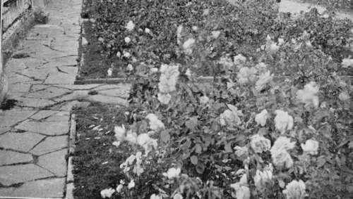

Chapter XV. Roses, Trees, Shrubs, Etc
Description
This section is from the book "Town Gardening", by Mary Hampden. Also available from Amazon: Town Gardening.
Chapter XV. Roses, Trees, Shrubs, Etc
How to Plant Deciduous Trees. Evergreen Trees. Clematises Again. Roses for Town Gardens. Why Roses fail. The Hardiest Roses. Rose varieties for the Suburbs. Shrubs for Suburban Gardens.
WE have already considered how to plant trees, with roots spread out on all sides when possible, with fine soil pressed among the roots, adequately staked and trodden firm. These rules apply to roses, shrubs, and large plants, as well as to limes, oaks, beeches, etc.
It is not much use to try to get flowering trees, such as lilacs, laburnums, and hawthorns, to grow in the core of a city, but of course they will flourish so in such cathedral and inland health-resort towns as Worcester, Bath, etc. etc., and in the suburbs of London and Midland towns they will be almost certain to thrive.
Generally speaking, deciduous trees are planted from October to April, and evergreens in September or April.
The plane-tree is the safest to use to make a screen before overlooking windows, though Lombardy poplars, chestnuts and limes are often satisfactory.
The best plan is to consult a local nurseryman when tall trees are required, that advice may be had as to the species likely to do well in the particular neighbourhood.
For ornament, in a garden plot, a Monkey Puzzler, Tulip Tree, Catalpa, or Robinia will assuredly please.
The ' tree of heaven ' (Ailanthus glandulosa) has lovely foliage, Japanese maples show vivid hues in their wonderful leaves, the Uhlan magnolia bursts into splendid flower before winter is really past, the white pyramidal almond is scarcely known, the loveliness of the fern-leaved beech requires to be seen to be believed, and Crataegus altaica is a hawthorn with big white blooms, that are followed by fruits as big as rose-heps.
But, I repeat, nurserymen should be asked to advise. I have seen ail the above trees doing excellently within a couple of miles of Baker Street Station, and delighted in discovering magnificent house draperies of white clematis montana in earliest summer, purple clematis Jackmanii in late summer, and the cultivated ' traveller's joy ' (Clematis vitalba), giving its masses of fluffy seed-vessels in late autumn as lavishly as if in a Devonshire lane.
Roses can be grown in open gardens, away from drip of trees, even where walls are high, for pruning partly discounts the 'drawing-up' influence of those walls. No doubt roses could be successful in dozens of town gardens where they have been tried and called failures, if their stems and leaves were washed once a week, except in the very extreme of wintry weather. It is the soot and chemical deposit that kills or turns trees sick.
A Bed Of Roses.
Another usual death-blow to a rose is to leave it for weeks together in unhoed ground. This truth has been told so often that I despair of impressing it upon the careless gardener; but if the man who really loves his garden, and the woman who particularly loves roses, will only read, believe, and practise the art of hoeing faithfully, I am happy to know that beautiful baskets of fine rose-blooms and a comforting outdoor display will result.
The right rose-trees must be obtained. While hosts of varieties will thrive in suburbs, even in fairly airy places between the suburbs and the core of great cities, as may be seen in parks, only the hardiest will look healthy and bear wrell in shut-in plots.
The following are a good representative dozen :—
Caroline Testout
Pink. Hybrid Tea.
J.B.Clark
Velvety scarlet-crimson. Hybrid Tea.
Mrs. John Laing
Pink. Hybrid Perpetual.
Gloire De Dijon
Yellow-buff. Tea.
Hugh Dickson
V iv i d crimson. Hybrid Perpetual.
Frau Karl Druschki
White. Hybrid Perpetual (Now foolishly renamed as Snow Queen or White Empress, according to local vendor's fancy).
Madame Abel Chatenay
Salmon pink. Hybrid Tea.
Madame Ravary
Orange-yellow. Hybrid Tea.
La Tosca
Salmon flesh. Hybrid Tea.
Ulrich Brunner
Cherry. Hybrid Perpetual.
Baroness Rothschild
Blush-rose. Hybrid Perpetual.
John Hopper
Deep rose. Hybrid Perpetual.
There are also suitable roses in other classes, such as—
Rosa Rugosa ' Rubra'
Magenta - rose, single, followed by large fruits. Forms great bushes.
Rosa Rugosa Alba
Single. White. Jessie. Cherry-crimson.
Miniature Polyantha
Ma Paquerette. White.
Miniatuve Polyantha
Mrs. Cutbush. Deep pink.
Miniature Polyantha
Common Pink China, or Monthly Rose.
Common Cabbage Rose
Pink.
Maiden's Blush
Crimson Damask.
Plmpinellifolia
Li I U S h white. Single, with very thorny stems. Can be kept cut as a low hedge ; known also as the Burnet, or Single Scots Rose.
For climbing roses, Chapter XX should be consulted.
Other rose varieties likely to succeed in the suburbs include :—
Souvenir De Pierre Notting
Apricot - gold. Tea.
Independence Day
Flame-and-apricot. Hybrid Tea.
King George V
Blackish carmine. Hybrid Tea.
Henrietta
Orange-crimson, fading to salmon. Hybrid Tea.
Christine
Golden yellow. Hybrid Tea.
Captain Hayward
Scarlet-crimson. Hybrid Perpetual. Needs rich ground.
Duke Of Edinburgh
Like scarlet velvet, but must be very little pruned, only tipped, and thinned out as to branches. Hybrid Perpetual.
Her Majesty
Enormous rose pink. Hybrid Perpetual.
His Majesty
Large, dark crimson. Very fragrant.
Hybrid Tea
Amy Robsart. Hybrid sweet briar; large deep rose flowers.
Shrubs for suburban gardens are plentiful, but this is a list of some of the best :—
Berberis Stenophylla
Gold.
Berberis Darwinii
Orange buddleia veitchiana.
Deep Heliotrope
Purple.
Siberian Pea (Caragana Arborescens)
Yellow.
Bladder Senna (Colutea Arborescens)
Yellow flowers, and fine red-brown seed-vessels.
Golden Privet (Ligustrum Aureum)
Cotoneaster franchetta.
Orange Berries
Cotoneaster acutum.
Autumn tinted.
Atriplex Halimus
Purple.
Bacchus Tree
(x\zara Baccharis patagonica).
Evergreen.
Daphne Mezereon
Rose.
Deutzia Gracilis
White.
Euonymus Buxifolius
Evergreen. Dwarf.
Euonymus Japonicus
Radicans. Evergreen.
Quick growing.
Euonymus Japonicus
Argentea Variegata.
Variegated silver.
Euonymus Japonicus
Aurea Variegata.
Variegated gold. Mock Orange, called.
Syringa (Philadelphus Coronarius)
White. Mock Orange, called Syringa (Philadelphus lemoinei avalanche).
Japanese Cherry (Primus Japonica)
White, also rose.
Hardy Rhododendrons
All colours. Must not encounter lime in the soil. And will not bloom unless the previous year's flowers were picked off as soon as faded.
American Currant (Ribes Sanguineum)
Rose.
Spiraea Aitchisoni
White.
Veronica Buxifolia
White.
Veronica Hybrida (Autumn Glory)
Blue-purple.
Yucca
A loe-like giant.
Weigela Amabilis
In sunny gardens these beautiful rose red or white flowering shrubs should succeed; also another species, Weigela Splendens. Maroon leaves, yellow flowers.
Continue to:
- prev: Chapter XIV. Bedding Out For Spring
- Table of Contents
- next: Chapter XVI. The Hardiest Perennials And Biennials